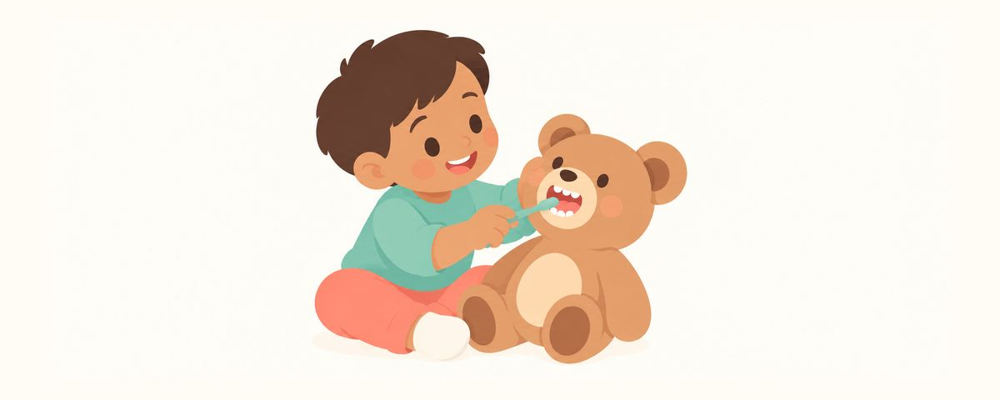

Vorbereitung auf den ersten Zahnarztbesuch: Bilderbücher, Rollenspiele und Worte
Sorgen Sie sich, dass Ihr Kind Angst vor dem Zahnarzt hat? Bilderbücher und Zahnarztspiele ab 1–2 Wochen vorher, was Sie sagen und was nicht, und der passende Termin.
Auf einen Blick
- Bücher und Rollenspiele machen den Zahnarzt vertraut
- Angstmachende Wörter wie wehtun, Spritze oder ziehen vermeiden
- Ihre Nervosität färbt auch auf Ihr Kind ab
Viele Eltern sorgen sich, dass ihr Kind beim Zahnarzt weint oder den Zahnarzt danach nicht mehr mag. Ein neuer Ort ist auch für Erwachsene erst einmal fremd. Mit etwas Vorbereitung wirkt selbst der erste Zahnarztbesuch viel weniger fremd. Hier lesen Sie, wie Sie sich zu Hause vorbereiten und was Sie am besten sagen.
Warum Kinder Angst vor dem Zahnarzt haben
Meist haben Kinder Angst vor dem Zahnarzt, weil vieles unbekannt ist. Ein fremder Stuhl, helles Licht, ungewohnte Geräusche und Erwachsene mit Maske – alles auf einmal. Was ein Kind vorher auf Fotos oder Bildern gesehen und im Spiel ausprobiert hat, wirkt weniger beängstigend. Deshalb wird auch in der Praxis zuerst erklärt, dann das Instrument gezeigt und erst danach etwas gemacht.
Auch Ihre Gefühle übertragen sich auf Ihr Kind. Man geht davon aus, dass Eltern mit schlechten Zahnarzterfahrungen ihre Unsicherheit weitergeben und damit das Verhalten ihres Kindes beeinflussen können. Studien zeigen, dass Zahnarztangst bei Eltern und Kindern zusammenhängt, und zwar umso deutlicher, je jünger die Kinder sind. Wenn Sie mit entspanntem Gesicht sagen: „Das wird spannend!“, ist das schon eine große Vorbereitung.
Weinen oder Zappeln bei der Untersuchung ist in diesem Alter normal. Ziel des ersten Besuchs ist nicht, dass Ihr Kind nicht weint, sondern dass es den Zahnarzt einmal erlebt.
So bereiten Sie sich 1–2 Wochen vorher vor
- Schauen Sie gemeinsam Bilderbücher oder Videos an. Beginnen Sie 1–2 Wochen vorher mit Geschichten über den Zahnarztbesuch. Wählen Sie solche, in denen Wörter wie wehtun, Spritze oder Bohrer nicht vorkommen.
- Spielen Sie Zahnarzt. Ziehen Sie ein weißes Hemd als Kittel an und zählen Sie bei einem Kuscheltier oder einem Familienmitglied mit „Aaah“ die Zähne. Noch mehr Spaß macht es, wenn Sie die Rollen tauschen und Ihr Kind als Zahnärztin oder Zahnarzt Ihre Zähne zählt.
- Üben Sie, den Mund aufzumachen. Machen Sie vor dem Spiegel gemeinsam den Mund weit auf und halten Sie ihn ein paar Sekunden offen.
- Wählen Sie den Termin gut. Legen Sie ihn nicht in die Mittagsschlafzeit, sondern auf eine Zeit, zu der Ihr Kind ausgeruht ist. Müde und hungrig ist jeder schlecht gelaunt.
- Nehmen Sie Lieblingsdinge mit. Das Kuscheltier oder die Decke, mit der Ihr Kind immer schläft, gibt auch an einem fremden Ort Sicherheit.
- Planen Sie die Zeit danach. Nehmen Sie sich etwas Schönes vor, etwa den Spielplatz. Snacks gibt es erst nach dem Besuch.
Sprechen Sie kurz und einfach:
- „Die Zahnärztin zählt, wie viele Zähne du hast.“
- „Sie schaut, wie gut du deine Zähne geputzt hast.“
Wörter wie wehtun, Spritze oder ziehen bringen Sie dagegen gar nicht erst ins Spiel. Auch der Trost „Das tut überhaupt nicht weh“ lässt an Schmerzen denken und ist deshalb besser zu meiden. Fragt Ihr Kind „Bekomme ich eine Spritze?“, antworten Sie: „Das weiß ich nicht genau. Lass uns zusammen die Zahnärztin fragen.“
Kleine Kinder werden manchmal auf dem Schoß eines Elternteils untersucht. Elternteil und Zahnarzt sitzen sich dabei Knie an Knie gegenüber. Ihr Kind sitzt mit dem Gesicht zu Ihnen und legt sich dann nach hinten auf den Schoß der Zahnärztin oder des Zahnarztes. Sie halten einfach die Hände Ihres Kindes.
Häufige Fragen
Sollte ich mit ins Behandlungszimmer gehen?
Das hängt vom Kind und von der Praxis ab. Manche Kinder machen besser mit, wenn ein Elternteil dabei ist, andere nicht. Eine einzige richtige Antwort gibt es nicht. Sprechen Sie es vorher mit dem Praxisteam ab.
Mein Kind hat die ganze Zeit geweint. War das ein Misserfolg?
Nein. Weinen oder Zappeln ist in diesem Alter normal. Dass Sie bis zum Ende dabeigeblieben sind, genügt. Nehmen Sie Ihr Kind danach fest in den Arm und sagen Sie ihm, dass es das toll gemacht hat.
Mein Kind hat schon schlechte Erfahrungen beim Zahnarzt gemacht. Was tun?
Sagen Sie das bei der Terminvereinbarung. Fragen Sie auch, ob Sie sich die Praxis vor einer Behandlung einmal ansehen dürfen. Schon ein Besuch, bei dem nur geschaut und nichts gemacht wird, kann den nächsten Termin deutlich leichter machen.
Wann sollte der erste Zahnarztbesuch sein?
Planen Sie den ersten Besuch, wenn der erste Zahn kommt, und suchen Sie sich spätestens um den ersten Geburtstag eine feste Zahnarztpraxis. Wer hingeht, bevor etwas wehtut, erlebt die Praxis eher als angenehmen Ort.
Wann Sie die Praxis vorab informieren sollten
- Ihr Kind ist besonders ängstlich oder fremdelt stark
- Ihr Kind hat beim Zahnarzt oder im Krankenhaus schon schlechte Erfahrungen gemacht
- Sie möchten absprechen, ob Sie mit ins Behandlungszimmer gehen
- Sie möchten sich die Praxis vor einer Behandlung einmal ansehen
- Der erste Geburtstag ist vorbei und Sie haben noch keine feste Zahnarztpraxis
Zur richtigen Zeit erinnert werden
Geben Sie in der App Zahnkalender das Geburtsdatum Ihres Kindes (oder den Geburtstermin) ein, und diese Artikel erreichen Sie als Erinnerung genau dann, wenn sie wichtig sind. Kostenlos, ohne Anmeldung.
Quellen
- AAPD · Behavior Guidance for the Pediatric Dental Patient (2024)
- ADA · First Dental Visit for Baby (MouthHealthy) (2026)
- Int J Paediatr Dent · Empirical evidence of the relationship between parental and child dental fear (Themessl-Huber) (2010)
Die Informationen in diesem Artikel dienen der allgemeinen Aufklärung und ersetzen keine zahnärztliche Behandlung. Sprechen Sie mit einer Zahnärztin oder einem Zahnarzt über die Situation Ihres Kindes.